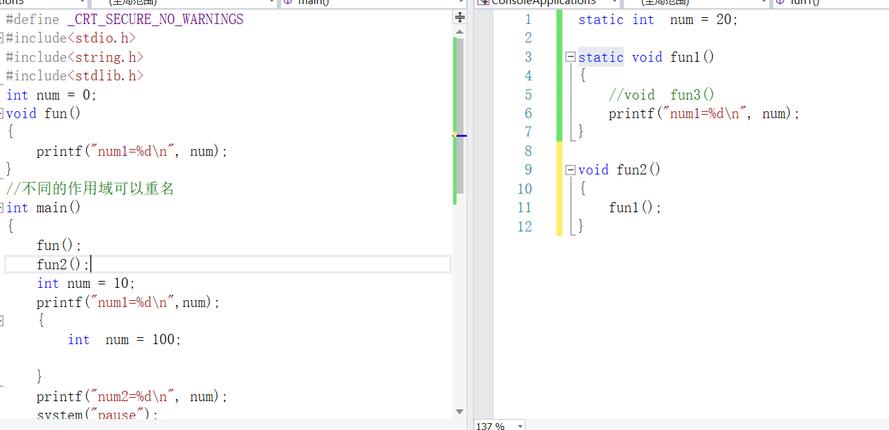

1 作用域:
变量起作用的范围
2 变量
局部变量 在{}范围之内定义的变量
auto int a;
静态局部变量 在{}范围之内定义的变量,前面加上static修饰变量
static int a;
全局变量 在函数之外定义的变量
静态全局变量
在函数之外定义的变量 ,加上static修饰的变量
static int a;
生命周期:
什么时候开辟空间(出生),释放空间(死亡),这个过程叫生命周期
3 局部变量
a> 作用域 在定义变量的{}之内有效
b>生命周期 程序运行至变量定义处开辟空间,所在的函数结束之后释放空间
c>未初始化的值 随机
2 静态局部变量
a>作用域 在定义变量的{}之内有效
b>生命周期 执行main函数之前就已经开辟空间,程序结束之后才释放空间
c>未初始化的值 0
3 全局变量
a>作用域 整个工程,所有文件
b>生命周期 执行main函数之前就已经开辟空间,程序结束之后才释放空间
c> 未初始化的值 0
4 静态全局变量
a>作用域 当前文件
b> 生命周期 执行main函数之前就已经开辟空间,程序结束之后才释放空间
c> 0
作用域: 局部变量(普通局部和静态局部)在{}范围之内 普通全局变量作用域在整个工程 静态全局作用当前文件
生命周期: 只有普通局部是运行至变量定义处时开辟,函数结束释放,其他变量都是执行main函数之前就已经开辟空间,程序结束之后才释放空间
初始化的值: 只有普通局部未初始化的值为随机,其他为0
注意: 在.h中,全局变量只声明不定义,定义只放在.c文件,
5 变量重名问题
考虑作用域前提下,就近原则

6 静态函数
静态函数就是在函数定义时加上static修饰的函数,静态函数只可以被当前文件函数调用
static void fun(){}
普通的函数没有加任何修饰,就是全局函数,整个工程可以调用
7 程序内存分布

8 memset
#include <string.h>
void *memset(void *s, int c, size_t n);
功能：将s的内存区域的前n个字节以参数c填入
参数：
s：需要操作内存s的首地址
c：填充的字符，c虽然参数为int，但必须是unsigned char , 范围为0~255
n：指定需要设置的大小
返回值：s的首地址
int main()
{
int a =10;
//a = 0; -> memset()
memset(&a,0,sizeof(a));
//printf("a=%d\n",a);
char buf[10] = "";
strcpy(buf,"hello");
printf("%s\n",buf);
memset(buf,0,sizeof(buf));
printf("%s\n", buf);
//将前9个字符置为'a'
memset(buf,'a',sizeof(buf)-1);
printf("%s\n", buf);
system("pause");
return 0;
}
9 内存拷贝 memcpy
#include <string.h>
void *memcpy(void *dest, const void *src, size_t n);
功能：拷贝src所指的内存内容的前n个字节到dest所值的内存地址上。
参数：
dest：目的内存首地址
src：源内存首地址，注意：dest和src所指的内存空间不可重叠，可能会导致程序报错
n：需要拷贝的字节数
返回值：dest的首地址
int main()
{
char str1[128] = "";
char str2[128] = "abc\0def\0dadfa";
//memcpy(str1,str2,10*sizeof(char));
strncpy(str1, str2, 10 * sizeof(char));
for (int i = 0; i < 10; i++)
{
printf("%d ",str1[i]);
}
system("pause");
return 0;
}
int main04()
{
//将数组a中前5个元素拷贝至数组b中
int a[10] = {1,2,3,4,5,6,7,8,9,10};
int b[10] = { 0 };
//a = b;
memcpy(b,a,sizeof(int)*5);
for (int i = 0; i < sizeof(b) / sizeof(b[0]); i++)
{
printf("%d ",b[i]);
}
system("pause");
return 0;
}
10 memcmp
内存比较
#include <string.h>
int memcmp(const void *s1, const void *s2, size_t n);
功能：比较s1和s2所指向内存区域的前n个字节
参数：
s1：内存首地址1
s2：内存首地址2
n：需比较的前n个字节
返回值：
相等：=0
大于：>0
小于：<0
int main()
{
char num1[] = { 1,0,3,4,5,6,7 };
char num2[] = { 1,0,3,6,5,6,7 };
char str1[] = "dbakf\0afnafa";
char str2[] = "dbakf\0bfnafa";
//printf("%d\n", memcmp(num1,num2,7*sizeof(char)));
//printf("%d\n", strncmp(num1, num2, 7 * sizeof(char)));
printf("%d\n", memcmp(str1, str2, sizeof(str1)));
printf("%d\n", strncmp(str1, str2, sizeof(str1)));
system("pause");
return 0;
}
总之: 内存操作函数遇到0会\0都不会结束操作,而str字符串处理函数遇到\0都会结束
11 malloc 向堆区申请空间
#include <stdlib.h>
void *malloc(size_t size);
功能：在内存的动态存储区(堆区)中分配一块长度为size字节的连续区域，用来存放类型说明符指定的类型。分配的内存空间内容不确定，一般使用memset初始化。
参数：
size：需要分配内存大小(单位：字节)
返回值：
成功：分配空间的起始地址
失败：NULL
12 free
)free()
#include <stdlib.h>
void free(void *ptr);
功能：释放ptr所指向的一块内存空间，ptr是一个任意类型的指针变量，指向被释放区域的首地址。对同一内存空间多次释放会出错。
参数：
ptr：需要释放空间的首地址，被释放区应是由malloc函数所分配的区域。
返回值：无
注意: free只能释放一次上次申请过的空间
free 参数 地址必须是上一次malloc申请过的,不能改变这个地址
int main()
{
//申请一个字符数组,有1024元素
char *p =(char *) malloc(1024);
memset(p,0,1024);
strcpy(p,"helloworld");
free(p+1);
//free(p); malloc申请的空间不可以释放两次,申请一次,释放一次
//printf("%s\n",p);
system("pause");
return 0;
}
int main07()
{
//int a[10]
//申请一个数组,数组有10个元素,每个元素int类型
int *p = (int *)malloc(sizeof(int)*10);
memset(p,0,sizeof(int )*10);
*p = 1000;
*(p + 5) = 2000;
for (int i = 0; i < 10; i++)
{
printf("%d ",*(p+i));
}
system("pause");
return 0;
}